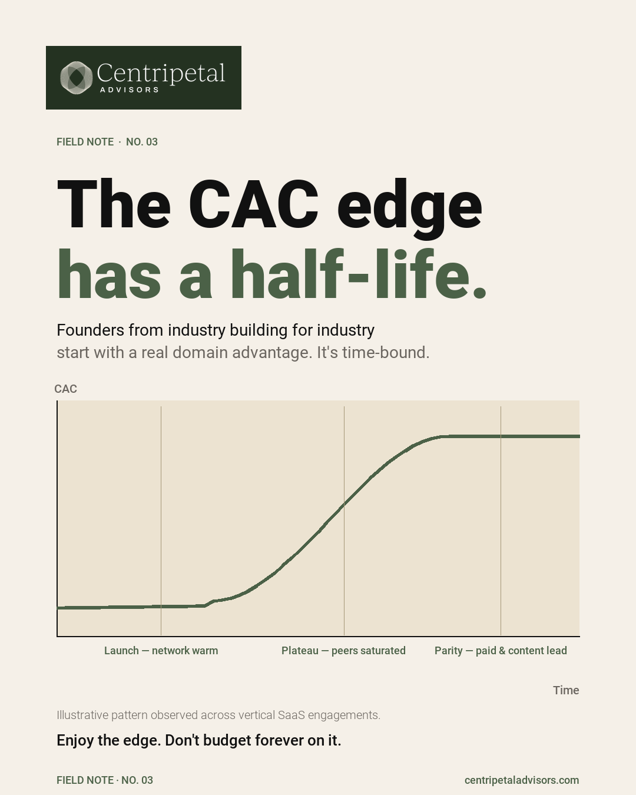

The Vertical SaaS Advantage Has a Half-Life

Vertical SaaS founders often begin with a distribution edge. They know the industry. They know the buyers. They speak the language. Early customers come through relationships, conferences, and word of mouth. CAC is low. Payback is fast. The unit economics look exceptional.
The question is how long it lasts.
The Initial Advantage
In the early stages, vertical SaaS companies often acquire customers at a fraction of the cost of horizontal competitors. The founder's network is the distribution channel. Industry credibility replaces brand awareness. Referrals replace paid acquisition.
This is a real advantage, and it shows up in the metrics: lower CAC, faster sales cycles, higher win rates. But it is important to understand what is driving those numbers. If the advantage is the founder's personal network, it is inherently limited by the size of that network.
Maturation Dynamics
As the company grows past the founder's immediate network, acquisition dynamics shift. The easy customers have already been reached. The next tier requires outbound sales, content marketing, paid channels, or partnerships. Each of these costs more than a warm introduction.
CAC begins to rise. Sales cycles lengthen. The metrics start to look more like a horizontal SaaS company, because the distribution mechanics are converging.
Measuring the Edge
The way to track this is straightforward: measure blended CAC, channel-specific CAC, and payback period by quarter. Compare the founder-led channel against paid and inbound. The gap between them is the advantage. The trend over time is the half-life.
If the founder-led channel is shrinking as a share of new revenue while blended CAC is rising, the advantage is decaying. This is not a problem if the company is building durable distribution channels alongside the founder's network. It is a problem if the entire growth plan depends on the initial edge persisting.
Extending the Advantage
The companies that sustain low CAC in vertical markets do so by converting the founder's initial credibility into institutional assets: a recognized brand within the vertical, a content engine that generates inbound, product features that create switching costs, and a customer base that generates referrals without the founder's direct involvement.
The goal is to make the distribution advantage a property of the company, not a property of the founder.
The Bottom Line
A vertical SaaS distribution advantage is real and valuable. It is also finite unless the company invests in making it durable. Track the half-life. Build the replacement channels before the initial edge erodes.
Frequently Asked Questions
Does vertical SaaS create a lasting customer-acquisition advantage?
How should a vertical SaaS company measure its distribution advantage?
What happens when the reachable vertical market matures?
Want to measure your distribution advantage?
Schedule a Conversation